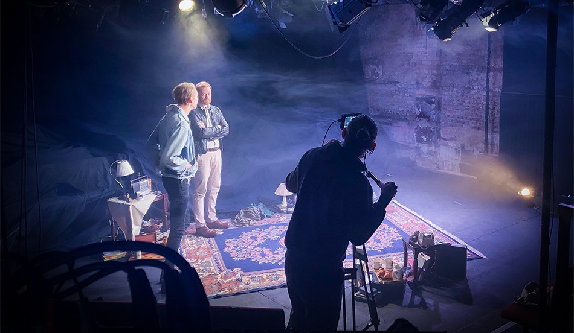

Smartphone cameras are changing filmmaking for good
We are delighted to announce that we will be sponsoring SMART – London's first international smartphone film festival. Launched by the team behind the first smartphone film to win an academy award – Missed Call, TV BAFTA 2019 – SMART celebrates the innovation, intimacy and diversity of smartphone filmmaking and will take place between 21‐25 June 2021. See details and here.
Smartphone cameras have irreversibly changed the media landscape: from revolutionising news stories to their use in mainstream film and TV. At tpr, we are passionate about stories told by new voices so it's a natural fit to partner with SMART which advocates that anybody can now make a brilliant film regardless of their background or means.
With advanced technology ever more accessible: from smartphone cameras to image stabilisation software, filmmakers are able to bypass the gatekeepers of traditional production while still creating high quality films people want to watch.
Co‐founder and co-festival Director Victoria Mapplebeck (BAFTA winner and Missed Call's director) said: "We're delighted that tpr media are sponsoring SMART – their extensive network and knowledge of the media in the UK and beyond has been fantastic in ensuring that we get really great publicity, high quality and diverse submissions to the festival, and audience reach for the shortlisted films and directors."
Lockdown has accelerated smartphone filmmaking's coming of age. It is proving to be a game-changer in film and video production, bringing fresh approaches to cinema, influencing the direction of television and completely redefining short films.
Co-founder and co-festival Director Adam Gee (Emmy winner and Missed Call's producer) remarked: "SMART above all wants to inspire and prompt people of all backgrounds to take the plunge and make that film they've always wanted to. The freshest, smartest and most exciting talent these days is to be found in places like TikTok. That's the spirit we're tapping into."
In recent years, filmmakers have created ground-breaking films with smartphones: from mainstream feature films to Turner Prize winning film installations. These include Steven Soderbergh (High Flying Bird), Luca Guadagnino (Fiori, Fiori, Fiori), Claude Lelouch, Jennifer Zhang, Michel Gondry, Jenna Bass and Sean Baker (Tangerine).
There are six categories covering scripted and unscripted films of all lengths and genres. The festival encourages films made 100% on smartphones but anything shot more than 50% on a smartphone is eligible.